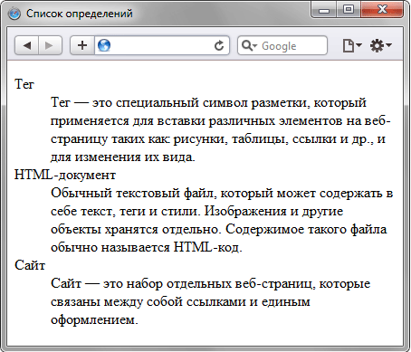

Добро пожаловать на второе занятие!
HTML углубленное форматирование текста
Списки определений
Сейчас мы знаем 2 типа списков в HTML - нумерованные и ненумерованные, есть еще третий тип списка, с которым вы иногда встретитесь — список определений. Цель этих списков состоит в том, чтобы пометить набор элементов и их связанных описаний, таких как термины и определения или вопросы и ответы.
Список определений состоит из двух элементов — термина и его определения. Сам список задается с помощью контейнера <dl>, термин — тегом <dt>, а его определение — с помощью тега <dd>.
Структура списка определений:
<dl>
<dt>Термин 1</dt>
<dd>Определение 1</dd>
<dt>Термин 2</dt>
<dd>Определение 2</dd>
</dl>
Пример списка определений: 
Скопируйте текст и сделайте список, как в примере.
Тег
Тег — это специальный символ разметки, который применяется для
вставки различных элементов на веб-страницу таких как: рисунки,
таблицы, ссылки и др., и для изменения их вида.
HTML-документ
Обычный текстовый файл, который может содержать в себе текст,
теги и стили. Изображения и другие объекты хранятся отдельно.
Содержимое такого файла обычно называется HTML-код.
Сайт
Cайт — это набор отдельных веб-страниц, которые связаны между собой
ссылками и единым оформлением.
Цитаты
Тег <blockquote> предназначен для выделения длинных цитат внутри документа. Текст, обозначенный этим тегом, традиционно отображается как выровненный блок с отступами слева и справа (примерно по 40 пикселов), а также с отбивкой сверху и снизу.
<blockquote>Текст</blockquote>
Строчные цитаты
Строчные цитаты работают точно так же, за исключением того, что они используют элемент <q>. Цитаты автоматически отображаются в браузере в кавычках.
Тег <cite> помечает текст как цитату или сноску на другой материал.
Браузеры обычно устанавливают текст внутри элемента <cite> курсивом.

Вот что получится:
Айзек Азимов
Нельзя сказать человеку: «Ты можешь творить.
Так давай, твори». Гораздо вернее подождать, пока он
сам не скажет: «Я могу творить, и я буду творить, хотите
вы этого или нет».
http://www.asimovonline.com
Некоторые текстовые теги, которые могут Вам встретиться:
-
Аббревиатуры
Иногда нужно использовать надстрочный или подстрочный индекс при разметке, напримре, даты, химические формулы и математические уравнения. Элементы <sup> и <sub> созданы для таких ситуаций.
<p>Мы используем <abbr title="Hypertext Markup Language">HTML</abbr> для структурирования наших веб-документов.</p>
Мы используем HTML для структурирования наших веб-документов. -
Верхний и нижний индекс
<p>Химическая формула кофеина: C<sub>8</sub>H<sub>10</sub>N<sub>4</sub>O<sub>2</sub>.</p> <p>Если x<sup>2</sup> равно 9, x должен равняться 3 или -3.</p>Результат этого кода выглядит следующим образом:
Химическая формула кофеина: C8H10N4O2.
Если x2 равно 9, x должен равняться 3 или -3.
-
Представление компьютерного кода
<code>: Для разметки общих частей компьютерного кода.<pre>: Для сохранения пробелов (как правило, кодовых блоков) — если вы используете отступы или лишние пробелы внутри вашего текста, браузеры будут игнорировать его, и вы не увидите его на вашей отображаемой странице; если вы поместите текст в теги<pre></pre>, то ваши пробелы будут отображаться идентично тому, как вы видите текст в редакторе.
Выравнивание текста
Для установки выравнивания текста обычно используется тег параграфа <p> с атрибутом align, который определяет способ выравнивания. Также блок текста допустимо выравнивать с помощью тега <div> с аналогичным атрибутом align. Он может принимать следующие значения:
- left — выравнивание по левому краю, задается по умолчанию;
- right — выравнивание по правому краю;
- center — выравнивание по центру;
- justify — выравнивание по ширине (одновременно по правому и левому краю). Это значение работает только для текста, длина которого более, чем одна строка.
Спецсимволы
Для отображения символов, которых нет на клавиатуре, применяются специальные знаки, начинающиеся с амперсанда (&) и заканчивающиеся точкой с запятой (;). Некоторые популярные спецсимволы:
| Имя | Код | Вид | Описание |
|---|---|---|---|
| |   | неразрывный пробел | |
| £ | £ | £ | фунт стерлингов |
| € | € | € | знак евро |
| ¶ | ¶ | ¶ | символ параграфа |
| § | § | § | параграф |
| © | © | © | знак copyright |
| ® | ® | ® | знак зарегистрированной торговой марки |
| ™ | ™ | ™ | знак торговой марки |
| ° | ° | ° | градус |
| ± | ± | ± | плюс-минус |